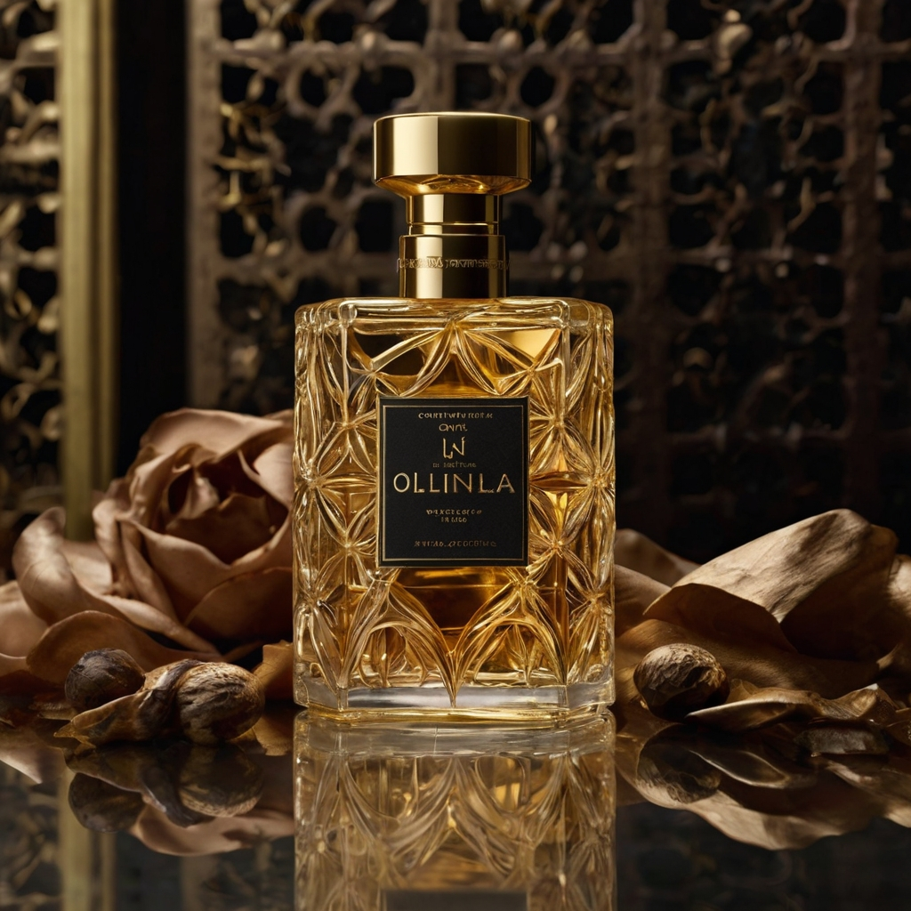

Olinalia Caballero
"Una fragancia masculina que evoca elegancia y distinción"
Olinalia Caballero Premium
"La máxima expresión de masculinidad, refinada con notas exclusivas"
Olinalia Dama Premium
"Una creación sublime que celebra la elegancia femenina"

Olinalia Dama
"Delicada fragancia que realza la belleza natural femenina"